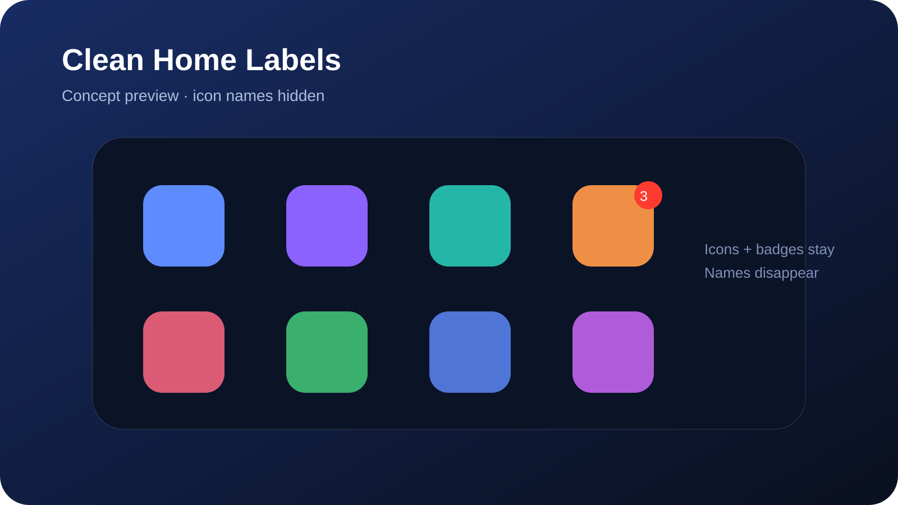
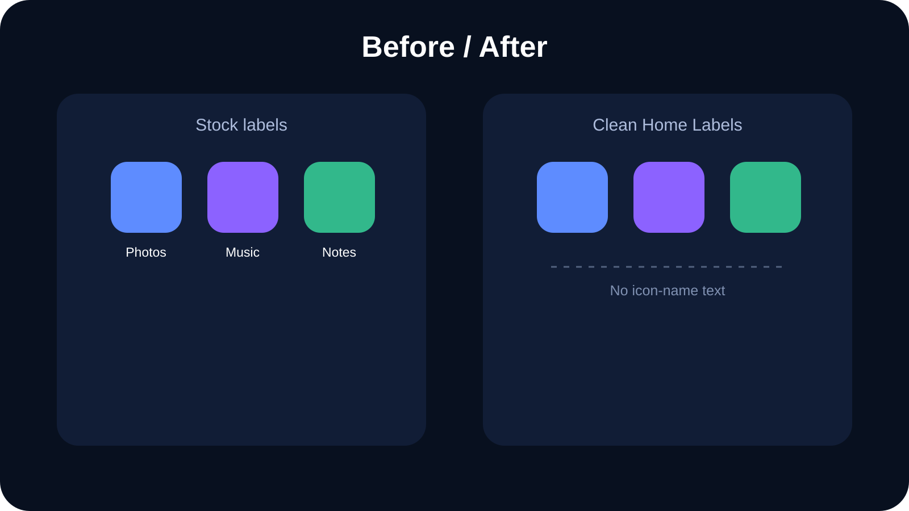

RootHide
For RootHide environments, including the primary iOS 16.0 test target.
Download RootHide .debiphoneos-arm64e
Hide SpringBoard app icon names for a cleaner Home Screen while keeping app icons and notification badges visible.
Jailbreak required. This package is build-validated but still awaits physical-device confirmation on the target iOS 16.0 RootHide device. Artwork below is conceptual.

Clean Home Labels has one job: when SpringBoard asks an icon view to show its name, the tweak keeps that label hidden. When the tweak is disabled, it passes Apple’s original hidden/visible request through unchanged so stock contexts are preserved.
It does not alter app icons, badges, folders, widgets, app data, notifications, or security settings.

For RootHide environments, including the primary iOS 16.0 test target.
Download RootHide .debiphoneos-arm64e
For standard modern rootless jailbreak environments.
Download rootless .debiphoneos-arm64
If SpringBoard becomes unstable, uninstall the package in Sileo and respring. Do not repeatedly force-respring while SpringBoard is already recovering.
No. It only changes label visibility.
Existing icon views may not all receive another label-visibility update immediately after a preference change, so a clean SpringBoard rebuild gives consistent results.
No. Both packages compile and pass package/source checks, but the private SpringBoard selector still needs confirmation on the matching iOS 16.0 device.